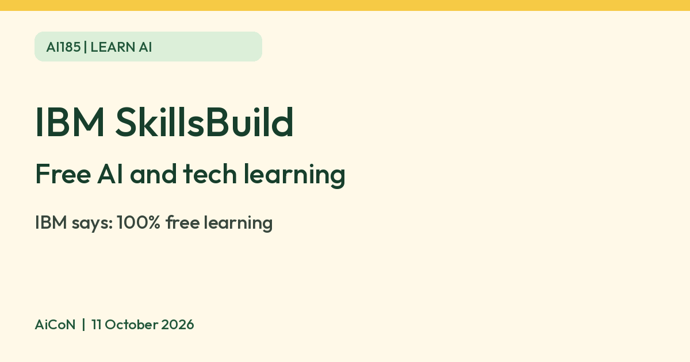

IBM SkillsBuild: free AI courses and an AI Fundamentals badge
IBM says SkillsBuild offers 100 percent free learning in AI and tech skills. The AI Fundamentals badge needs a free account and passed assessments.

What it is
IBM SkillsBuild is IBM's learning site for AI and tech skills. Its home page lists learning in AI, cybersecurity and data, including generative AI and machine learning, in more than 20 languages across the platform. This does not establish that every course, assessment or badge is offered in every language. It also offers a tool called AI Level Up, which IBM describes as a way to check your AI readiness and find a path to grow your AI skills. IBM's Artificial Intelligence Fundamentals badge page describes a set of courses that cover natural language processing, computer vision, machine learning, deep learning, chatbots, neural networks and AI ethics.
Is it free
Yes. IBM's home page says SkillsBuild "offers 100% free learning". The Artificial Intelligence Fundamentals badge is open to registered SkillsBuild users. Adult learners aged 18 and over can earn it, and there is a separate route for high school students and educators. To earn it you complete the set of courses, pass the graded quizzes and final assessments, and complete the practice simulations. Check the live course path for its assessment rules and estimated time; we did not verify a pass mark or duration and do not promise automatic issuance. The checked SkillsBuild page explicitly calls this learning free. Do not confuse a SkillsBuild digital badge with a separate paid IBM professional certification or Coursera subscription mentioned elsewhere in IBM Training’s general terms.
Is it available in India
IBM's India newsroom says IBM has committed to skill 5 million learners in India in AI, cybersecurity and quantum computing by 2030, delivered through IBM SkillsBuild. We did not test the sign-up from India, so confirm the registration works for you.
How to try it
- Open skillsbuild.org and register for a free account.
- Pick the learning path for adult learners, university students or high school students.
- Start with the AI courses, and take the quizzes and assessments if you want the badge.
Limits to know
- A badge needs passed quizzes and final assessments, not only watching the courses.
- To issue a digital badge, IBM says your name, email address and badge earned are shared with Credly, a third-party processor in the United States.
- IBM's badge page lists personal information it processes, including name, email, IP address and approximate location.
- The course content and the available badges can change, so check the current catalogue.
- IBM Training says course progress and completion may be reported to an organization for an organization-run program. Ask your school or employer what is shared when using an institutional route.
- A digital badge demonstrates the skills in its description; it is not a degree, job offer, guaranteed interview or proof of professional certification. Avoid promising those outcomes on a resume.
- We did not take a course ourselves, create an account, complete assessments or claim a Credly badge. We did not audit the full SkillsBuild or Credly privacy policies or test data-deletion controls.
Frequently asked questions
Is IBM SkillsBuild free?
IBM says SkillsBuild offers 100 percent free learning. The AI Fundamentals badge needs a registered account and passed assessments.
Sources: IBM SkillsBuild, AI Fundamentals badge, IBM India newsroom. Checked 11 October 2026.